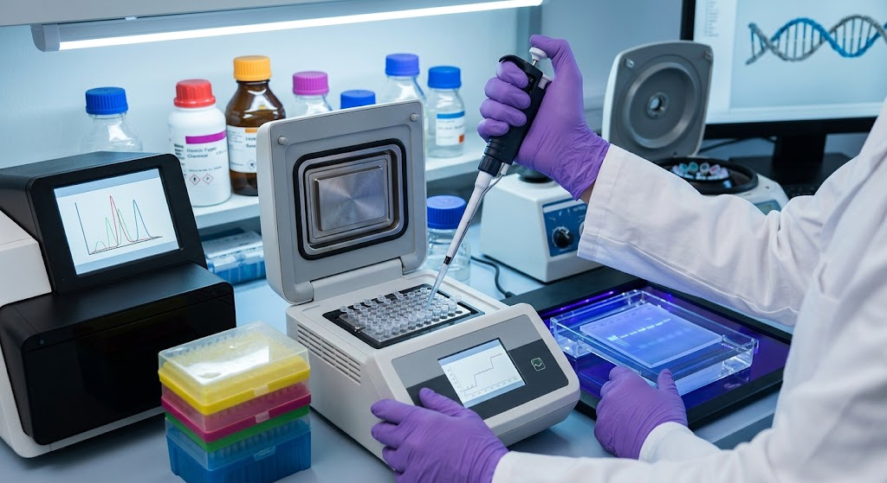

เทคโนโลยีทาง DNA และการประยุกต์ใช้
เทคโนโลยีทาง DNA คือ การนำความรู้เกี่ยวกับโครงสร้างและการทำงานของ DNA มาใช้ในการศึกษา ตรวจสอบ หรือเปลี่ยนแปลงสารพันธุกรรม เพื่อประโยชน์ทางการแพทย์ การเกษตร อุตสาหกรรม และการวิจัย
ตัวอย่างเทคโนโลยีทาง DNA ได้แก่ การเพิ่มปริมาณ DNA ด้วยเทคนิค PCR การตรวจลายพิมพ์ DNA เพื่อพิสูจน์ความสัมพันธ์หรือใช้ในงานนิติวิทยาศาสตร์ การหาลำดับเบสของ DNA และการตัดต่อยีนเพื่อเพิ่มหรือลดการแสดงออกของลักษณะบางอย่าง
การประยุกต์ใช้เทคโนโลยีทาง DNA เช่น การผลิตอินซูลิน การตรวจหาโรคทางพันธุกรรม การพัฒนาวัคซีน การปรับปรุงพันธุ์พืชให้ต้านทานโรค และการสร้างสิ่งมีชีวิตดัดแปลงพันธุกรรม (GMOs) อย่างไรก็ตาม การใช้เทคโนโลยีเหล่านี้ควรคำนึงถึงความปลอดภัย จริยธรรม และผลกระทบต่อสิ่งแวดล้อมด้วย